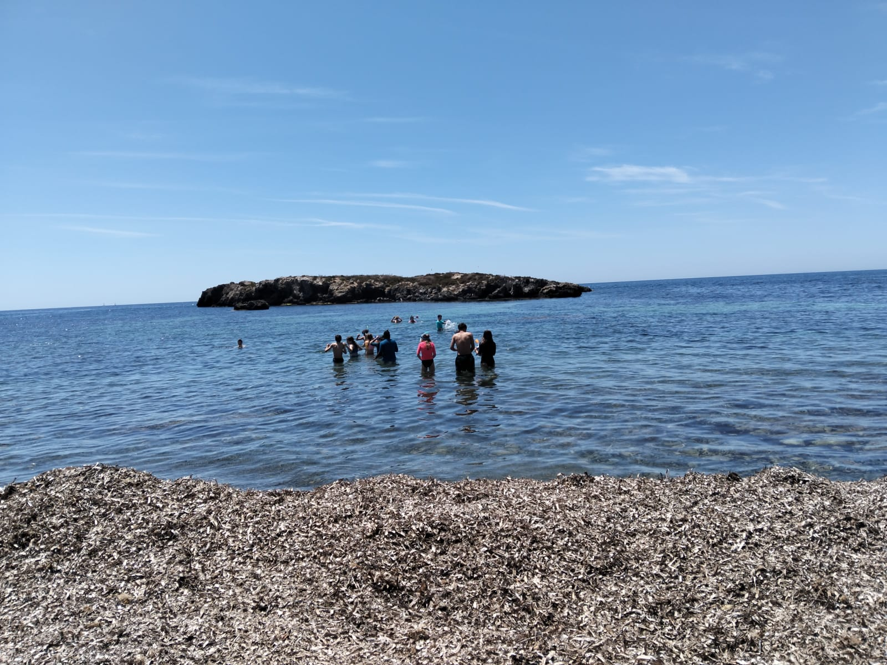
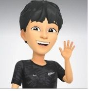

Group Mobility
Elche 2025
Tra palmeti, mare e l'isola di Tabarca: sostenibilità e ambiente con i compagni spagnoli.
21 foto · 1 video · 4 storie
Siamo stati a Elche anche in un'altra occasione: Elche 2026 (13–17 maggio 2026)


Scopri l'esperienza
Le loro storie
-
The experience of Elche was significant in some aspects: the organization of the very interesting activities, the relationship with the host family and with all the other kids. The best moment for me was the visit to “Tabarca” Island. We all shared fantastic experiences. I discovered their culture and foods that helped me look at reality from a different perspective. It was an unforgettable experience.
Ilaria -
For my Erasmus experience, I went to Elche, in Spain, where I had the opportunity to live an unforgettable experience with all the Spanish students, the teachers, and the families, and I was able to improve my language skills. These are some of the many opportunities that this project offers. I recommend everyone to try participating in this project because it can help you grow and it gives you wonderful and unforgettable moments. Go Erasmus+!
Sofia -

I really enjoyed the Erasmus experience in Elche, especially getting to know Spanish students and their friends. I improved my English a lot and experienced new cultures I had never tried before. I recommend everyone to try an experience like this, even if you’re a bit shy, because gradually you gain confidence with both students and adults. I thank the teachers and the school for giving me the opportunity to live this project.
Daniele -
This was my first Erasmus+ project, and it was an enriching experience. I met a lot of kind people and I also visited new places in Spain. We learnt more about sustainability and environment and we improved our English. I recommend everyone to try to participate in the Erasmus+ project.
Dalila